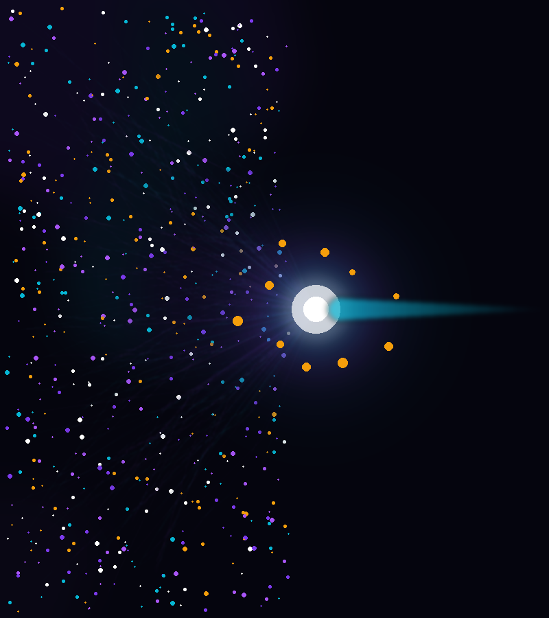
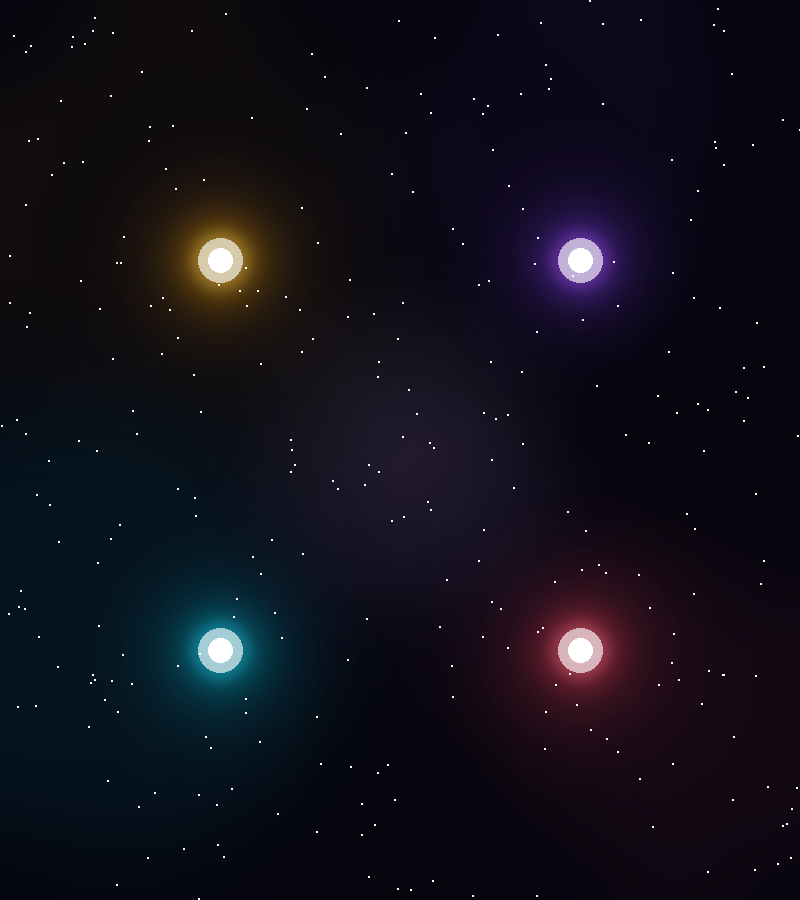
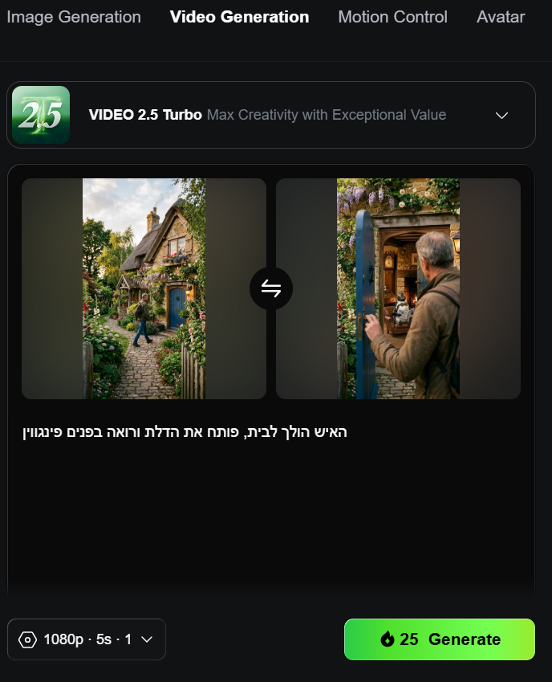
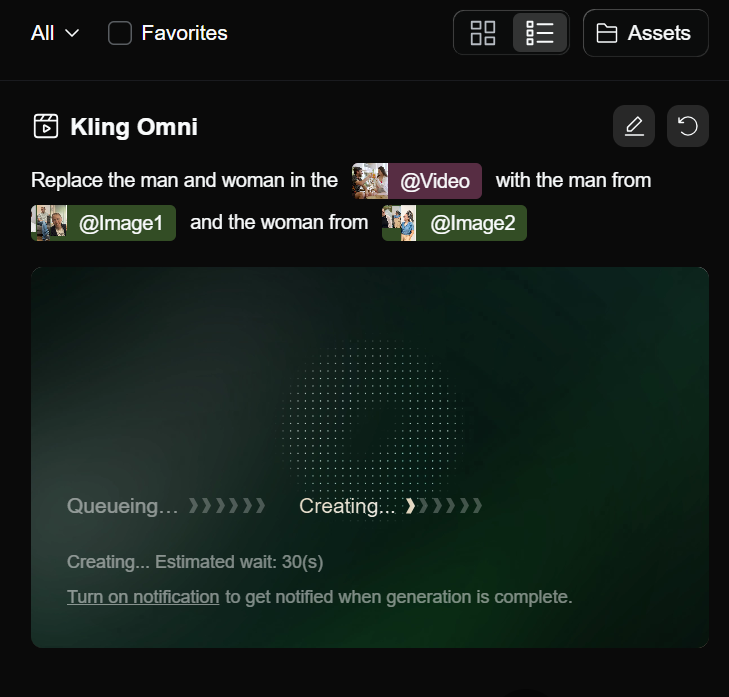

חכמה בינה ודעת
ככה זה כשכל המטרה של הטכנולוגיה היא לייתר את הצורך במומחים

מה הAI עושה?
הAI לא ממציא דברים חדשים — הוא מפשט דברים שפעם היה מורכב מאוד לעשות אותם, או שהיה צריך בשבילם להיות מומחה גדול.
אם מישהו הוא "מומחה גדול" בתחום מסובך — הAI רודף אחריו בצעדי ענק. הוא הפך את המורכבות שלו לנגישה לכולם.
מה שלפני שנתיים דרש 3 כלים, שעות עבודה וידע טכני עמוק — היום נעשה בפרומפט אחד, בעברית, בפחות מדקה.
כך הסביר "מומחה AI" על יצירת וידאו לפני כשנתיים לערך:
ואיך עושים
את זה עכשיו
אותה תוצאה — פרומפט אחד, בעברית, ב-Gemini. אפס התקנות. אפס ידע טכני.
האינסטינקט — לא

מה יש לנו
בשבילכם
אז מה ה-AI יודע לעשות?
AI זה זכר או נקבה?
"בינה מלאכותית" זה בוודאות נקבה... אבל "ה-AI יודעת" נשמע מוזר.
בואו נחליט — זו החלטה גורלית כי זה ישנה את כל המשך המצגת!
אז מה ה-AI יודעיודעת לעשות?
AI יודעיודעת לכתוב
Gemini · Gems · ChatGPT
שפה אחידה, תוכן חכם, הסגנון שלכם — אוטומטי
קהל: 25–40 עירוני
טון: אישי, לא מתייהר
להימנע: ז'רגון, אנגלית מיותרת
הזיכרון שלא
מתאפס
Gems = פרסונה של לקוח שנשמרת. תחשבו על השקופית במצגת שבה הגדרתם איך הלקוח מדבר — עכשיו הצ'אט יודע את זה.
- בנו Gem אחד לכל לקוח
- שיחה חדשה = לא צריך להסביר כלום
- Gem + קבצים = שפה מושלמת
מה להעלות לGem?
תעלו אותו. Gemini קורא הכל — טקסט, פלטות צבע, ערכים — ומפנים לתוך כל פרומפט.
תבחרו 10 פוסטים שלו שמאוד אהבתם, שימו אותם על מסמך Google Slides ותעלו. Gemini מבין מה רואה.
רק לתת בריף. הסגנון כבר שם — לא צריך להסביר כלום בכל שיחה.
בואו נראה
איך זה עובד
בנו Gem אחד לכל לקוח
העלו: 10 דוגמאות כתיבה + "ספר מותג" של סגנון הכתיבה, סוג התכנים וכו'
מעכשיו — כל פרומפט כתיבה עם אותו Gem = שפה אחידה אוטומטית.
זה לא קסם. זה תשתית. ותשתית טובה שווה יותר מכל פרומפט חכם.
AI יודעיודעת לעצב תמונות
Gemini Imagen · עריכה חכמה · עקביות ויזואלית
תורידו כבר את הכוכב המביך של הג'מביני
הgem שבנינו? בואו נעשה אותו דבר רק ויזואלית
תעלו אותו. פלטת צבעים, פונטים, סגנון תמונות — Gemini מבין הכל ומיישם בכל פרומפט ויזואלי.
תבחרו 8–10 תמונות שמייצגות את השפה הויזואלית של הלקוח, שימו ב-Google Slides ותעלו לGem.
רק לתת בריף ויזואלי. הסגנון כבר שם — כל תמונה שתייצרו תדבר את השפה של הלקוח.
בואו נראה
איך זה עובד
 🖼️ הדגמה
🖼️ הדגמה
3 טיפים שיעזרו לכם לעבוד עם ג'ימיני
כשרוצים עקביות — בקשו תמונה אחת עם 4–6 ווריאציות בפריים אחד (פאנל). אחר כך Upscale כל וריאציה בנפרד. כולן מאותה מחשבה ויזואלית.
3 טיפים שיעזרו לכם לעבוד עם ג'ימיני
תורידו כבר את הכוכב המביך הזהההההההה
(אלא אם כן זה בשביל אסטרל כמובן)
או שפשוט תעבדו יותר כמו מקצוענים
כדי להשתמש בשלוף לתמונה פה ושם, הצ'אט הוא אחלה. בטח אם משתמשים ב-GEM, אבל שימוש בכלי הייעודיים של גוגל ליצירת תמונות (Flow, AI Studio) או אפילו בכלים חיצוניים (Hedra, Runway, היגספילד) יאפשר לכם גם שליטה יותר טובה על הפרמטרים (גודל, רזולוציה, כמות תוצרים) והכי חשוב — יוציא לכם תמונות בלי כוכב!
רוצים PNG בלי רקע?
GPT עושה את זה לבד
רוצים תמונה בלי רקע בשביל אלמנט גרפי כלשהו?
אפשר כמובן לייצר עם ג'מיני ולהסיר את הרקע — אבל
GPT ממש יודע לייצר לבד תמונות PNG בלי רקע.
פשוט בקשו: "create a PNG image with transparent background of..."
AI יודעיודעת ליצור וידאו
Kling · Veo 3 · תנועה, פיזיקה ואור אמיתיים
מתמונה סטטית לקליפ קולנועי — בלחיצה
4 דרכים עיקריות ליצור וידאו עם AI
אם לא חשוב לכם הפרטים הספציפיים שיופיעו בוידאו, אלא רק התוכן ברמה הכללית, הכי פשוט. רק להגיד מה אתם רוצים ולקבל
הי הנה וידאו של חתול נוסע על אופניים!
שימו לב למחיר בקרדיטים של כל מודל
לדוג' כשמשתמשים ב-Hedra ורוצים רק להנפיש תמונה שיהיה בה קצת תנועה וחיים —
Grok כנראה יהיה הכי זול.
לא כל מודל שווה — בחרו לפי המשימה, לא לפי ההרגל.

כמו בהפקה
אמיתית
תבחרו קודם כל את הפריים, את הדמויות, תייצרו "סטוריבורד" — ורק אז תתחילו "לצלם" את הוידאו.
- זוכרים את פאנל התמונות? אחלה הזדמנות!
- קבעו את השחקנים לפני שמצלמים
- עקביות ויזואלית בין קטעים
- מוצר, פורטרט, סצנה — הכל עם תמונה
תייצרו אותה סצנה
מ-2 זוויות
כך תוכלו לחתוך ולייצר קאטים מעניינים
— בדיוק כמו צילום אמיתי עם שתי מצלמות.
וידאו שנראה מקצועי, דינמי, ולא "AI מדי".
תנועה עדינה = וידאו שהאלגוריתם מעדיף
ככה תייצרו תנועה עדינה בפוסט סטטי ותהפכו אותו לוידאו שמערכת הקידום מעדיפה לעיתים.
מפרומפט לתוצר:

האח הפדנטי
של Image to Video
עוזר לשמור על עקביות + לייצר סצנות מורכבות.
נגיד — מעבר מלוקיישן ספציפי ללוקיישן ספציפי.
פריים פתיחה + סיום → AI ממלא את הביניים
כמה שוטים —
וידאו אחד
כלי יחסית חדש שיוצר מראש סרטון שמורכב מכמה שוטים — לא צריך לחתוך, לחבר, לתכנן.
תנו פרומפט + תמונה — ומקבלים וידאו מקצועי עם כמה זוויות.
תצלמו אתם
את "התנועה"
אפשר לייצר וידאו שלכם — מעפן ככל שיהיה — שבו אתם מדגימים את התנועה, ואז לתת ל-AI לעשות את השאר.
ואז תנחו את המודל
מה לשנות
תארו לו איך זה צריך להיראות — סגנון, עולם, אווירה. האנימציה נשמרת, הנראות מתחלפת לחלוטין.
אם יש לכם וידאו
עם שחקנים שנראים לא טוב
קורה. לא חייבים לצלם מחדש. תנו ל-AI לשדרג את הנראות תוך שמירה על כל התנועה המקורית.
אפשר להפוך אותם
להרבה יותר יפים
אותה תנועה, נראות חדשה לגמרי. בלי סטודיו, בלי תאורה, בלי מייקאפ.

פריים כפול בנקודת החיבור —
כך מתקנים
כשמחברים שני קטעים שנוצרו עם Start/End Frame —
נוצר פריים כפול בנקודת החיבור שגורם לקפיצה.
מחיקת פריים אחד ב-CapCut בנקודת החיבור פותרת את זה.
AI יודעיודעת להיות אפטריסט
Kling Effects · Motion · שדרוג תוכן קיים
כשאין תקציב לAE — יש AI שעושה את זה בשניות
After Effects
בלי After Effects
Kling Effects מוסיף תנועה, חיים ואפקטים סינמטיים לתמונות סטטיות קיימות — ללא ידע טכני, ללא השקעת זמן.
- שיער מתנופף, בד זורם, עשן עולה
- אפקט "Ken Burns" — zoom פאן סינמטי
- Parallax — עומק תלת-מימדי מסטיל
- אנימציית מוצרים: ניצוצות, זוהר, חיים
- שדרוג ריילס / טיקטוק קיימים
מה לחפש
בהדגמה
- תמונת מוצר / סטיל סטטי כקלט
- האפקט שנבחר (שיער / ניצוצות / זוהר)
- שדרוג מיידי — לא יצירת וידאו חדש
- תוצאה: ריל שנראה כמו צילום מקצועי
מתי Kling Effects עדיף על צילום אמיתי
כשצריך: מזג אוויר שאין לכם (שלג, גשם), location שלא נסעתם אליו, סטיילינג שלא ביצעתם, או פריים לילה מתמונת יום.
Kling Effects לא יוצר — הוא מחיה תוכן קיים.
צילמתם? מצוין. עכשיו תנו לו לנשום.
AI יודעיודעת ליצור סאונד
ElevenLabs · Suno · קול, מוזיקה ואפקטים
מדיבוב מקצועי עד שיר שלם — מפרומפט
קול שלא נשמע כמו AI
הקול שלך —
בגרסה אחרת
- הקלטה קצרה בקול שלכם
- ElevenLabs ממיר לקול שנבחר
- האינטונציה שלכם — נשמרת
- מושלם לסינכרון על Veo/Kling
- כותבים טקסט מלא
- בוחרים קול + סגנון
- מהיר מאוד — 2 שניות
- עברית — לפעמים מבטא מוזר
- מספיק לרוב השימושים
- מקליטים בקול שלכם
- ElevenLabs ממיר לקול אחר
- האינטונציה שלכם — נשמרת
- עברית מושלמת — כי אתם דוברים
- הפתרון לדיבוב Veo/Kling
שיר שלם מפרומפט — כולל מילים
תוכן ישן →
גרסה חדשה
- קליפ אודיו קיים כקלט
- הוראה: "שנה לז'אנר X, הוסף Y"
- Suno מחדש את הסאונד לגמרי
- שימוש: ריל בר-מצווה → אלבום
STS של ElevenLabs על Veo = קול אחיד
הבעיה: Veo 3 מייצר קול שונה בכל קליפ — אי אפשר לצרף קטעים עם אותה דמות מדברת.
הפתרון: הקליטו פעם אחת את הדמות שלכם עם STS ב-ElevenLabs → מעכשיו כל הקטעים מדובבים באותו קול.
תוצאה: 5 קטעי Veo + דיבוב אחיד = פרסומת שלמה.
AI יודעיודעת לחבר
Hedra · CapCut · שפת גוף, דיבוב, עריכה
מוידאו לפרסומת מוגמרת — בלי סטודיו
כל תמונה —
יכולה לדבר
Hedra לוקח תמונה סטטית + אודיו ומייצר דמות מדברת עם שפת גוף ריאלית. בלי שחקן, בלי מצלמה, בלי גרין-סקרין.
- פורטרטים, דמויות מצוירות, לוגואים
- שפת גוף אמינה — לא "מתחרפנת"
- Dirty audio — אפשרי ומוציא טוב
- מושלם לדוברים, ספוקסמן, מסרים
מה לחפש
בהדגמה
- תמונה סטטית כקלט
- קובץ אודיו ElevenLabs STS
- תנועת פה + שפת גוף
- שימו לב להבדל בין המודלים
1 vs 2
- עיבוד תוך דקות
- מספיק לרשתות חברתיות
- קצת "פלסטיקי" בתנועות
- חינמי / זול יותר
- מתאים לתוכן שוטף מהיר
- עיבוד ארוך — 10–15 דקות
- תנועות אנושיות מאוד
- מיקרו-הבעות פנים
- מתאים לקמפיינים מקצועיים
- השקיעו כאן כשחשוב
עריכה בלי לדעת עריכה
Watermark מ-AI — שורה אחת
שמרו את הסרטון מ-CapCut כ-MP4 — ה-Watermark נעלם.
לחלופין: לחצו "Remove Watermark" מתחת לכלי AI.
AI יודעיודעת לביים
ChatGPT כבמאי · Shot list · Storyboard
מרעיון לתסריט קולנועי — בפרומפט אחד
Shot 2: ידיים עוטפות כוס חמה. Top-down. Slight rotation.
Shot 3: אדים עולים. Pull back reveal — חנות רטרו.
Shot 4: מבט מבחוץ → Pan to interior warmth.
ChatGPT —
הבמאי שלכם
ChatGPT יודע שפת קולנוע. תנו לו רעיון + סגנון ויחזיר shot list מוכן לKling/Veo, עם camera movement, תאורה ואווירה.
- Shot list לכל כלי וידאו
- סגנות: Wes Anderson, Kubrick, Nolan
- Storyboard טקסטואלי + ויז
- Direction לשחקנים ולפרומפטים
- מתאים ל-Hedra, Kling, Veo
מפרסומת → קולנוע
בפרומפט
- רעיון מוצר + סגנון כקלט
- ChatGPT מחזיר shot list מלא
- כל shot → פרומפט ל-Kling
- תוצאה: פרסומת קולנועית ב-30 דקות
AI יודעיודעת לנתח נתונים
ChatGPT · Gemini · גיליון אקסל → תובנות
מדוח ידני לניתוח שכולם מבינים — בשניות
גיליון אקסל → תובנות קריאטיביות
Excel → תובנות
בשפה שלנו
- קובץ גיליון אמיתי כקלט
- שאלה בעברית פשוטה
- גרף + תובנות + המלצה
- מה שלקח שעה — לוקח שניות
AI יכול לעשות הכל
תניחו שה-AI יודע · עצרו להניח
הכלי הכי חזק — ההנחה שאפשרי
חפשו איך. לא אם.
AI יודעיודעת להכין מצגת
הפתעה שהבטחנו · מה שאתם רואים עכשיו
זה מה שה-AI עשה בשבילנו
המצגת הזו — AI עשה אותה
stay curious.
האינסטינקט לחקור — לעולם לא.